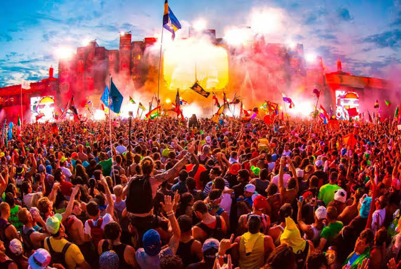

Primavera Sound Barcelona
El Primavera Sound Barcelona reúne música alternativa, indie, pop y propuestas internacionales en una cita destacada del calendario. Consulta novedades sobre su programación, artistas, recinto y entradas del festival.

Explora los principales festivales de música en España en 2027 y descubre conciertos, artistas nacionales e internacionales y nuevas propuestas musicales. Consulta eventos de música indie, rock, urbana y electrónica, compara sus características y encuentra información útil para organizar tu próxima experiencia musical. Visita la sección de próximos festivales o consulta cómo conseguir entradas y abonos.

El Primavera Sound Barcelona reúne música alternativa, indie, pop y propuestas internacionales en una cita destacada del calendario. Consulta novedades sobre su programación, artistas, recinto y entradas del festival.
Coca-Cola Music Experience apuesta por la música actual, los grandes éxitos y los nuevos talentos. Descubre las novedades de su cartel, las actuaciones en directo y la información práctica para asistir al evento.
Grimey x Palestina combina música urbana, cultura y compromiso social en una propuesta que reúne artistas y público alrededor de la música en directo. Consulta las novedades de programación y los detalles de celebración.
Festival Actual Logroño inaugura el año con una programación cultural que combina conciertos, diferentes estilos musicales y actividades. Una propuesta para descubrir artistas y disfrutar de la música en directo en distintos espacios de Logroño.
Descubre una cita imprescindible para los amantes de la música en directo, con artistas destacados, conciertos y una programación pensada para disfrutar de diferentes estilos musicales.
Una experiencia musical para descubrir nuevos talentos, actuaciones en directo y propuestas actuales. Consulta el cartel, los horarios y las novedades antes de organizar tu visita.
Disfruta de varios días de música, ambiente festivalero y conciertos de artistas nacionales e internacionales. Una opción para compartir música y descubrir nuevos grupos.
Una propuesta dirigida a quienes buscan conciertos, cultura y música en vivo. Infórmate sobre su programación, ubicación y recomendaciones para preparar una experiencia completa.
Compara las modalidades disponibles: entrada de día, abono general y opciones VIP, cuando estén ofertadas. Revisa fechas de venta, condiciones de acceso y disponibilidad en los canales oficiales de cada festival.
Compra únicamente en plataformas oficiales o distribuidores autorizados. Comprueba el precio final, las condiciones de devolución y la validez de la entrada. Desconfía de ofertas demasiado económicas y de vendedores no verificados. Consulta también la información de cada festival.